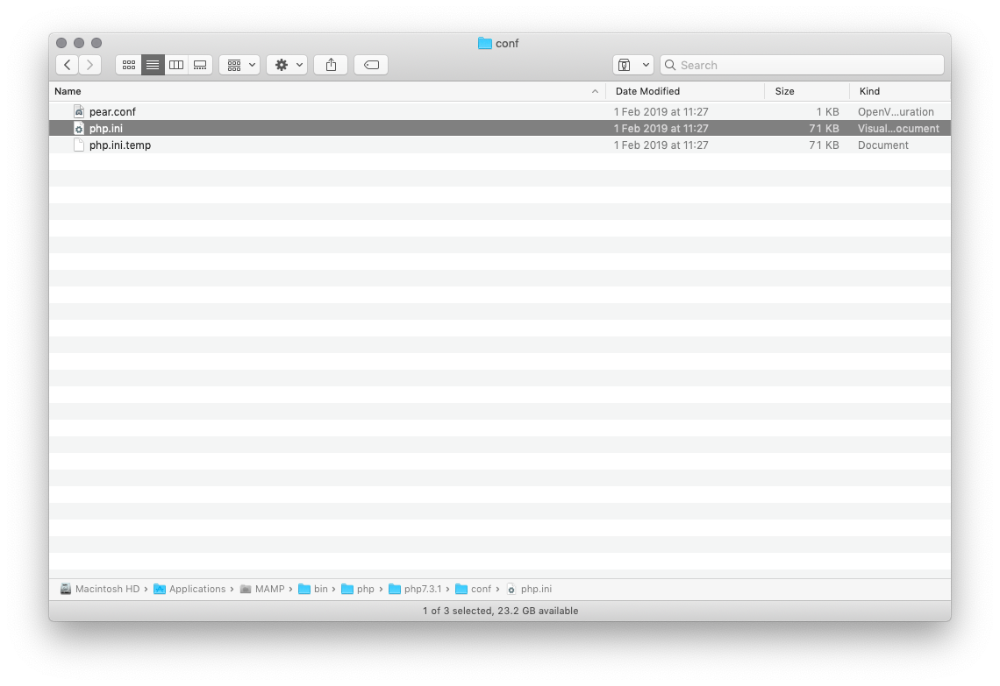
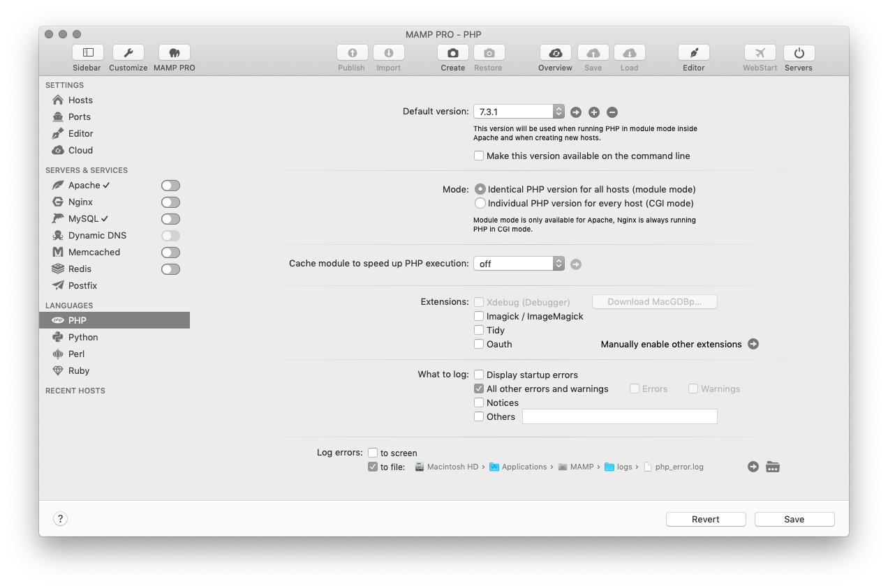
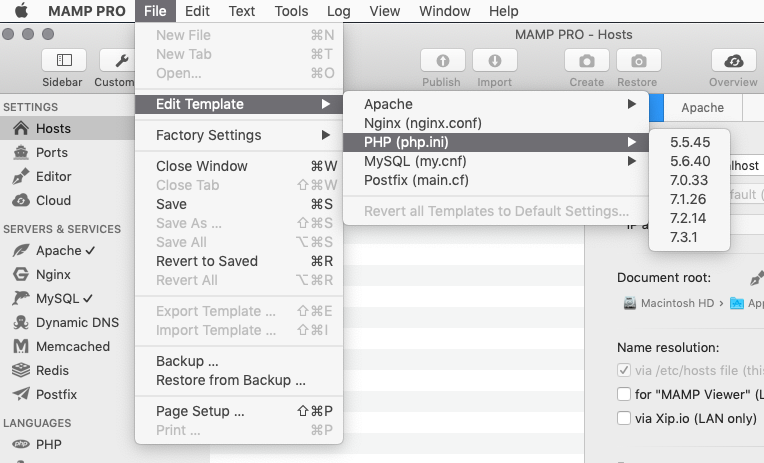

Importing Big Databases with MAMP & phpMyAdmin on OSX
—
When you are using phpMyadmin on MAMP or MAMP Pro out of the box, you might run into trouble trying to import databases. Usually this happens when you are trying to upload a large SQL file via phpMyAdmin (generally files greater then 32mb).
You’ll see errors like:
“ You probably tried to upload too large file. Please refer to documentation for ways to workaround this limit. ”
or
“Script timeout passed, if you want to finish import, please resubmit same file and import will resume.”
There are a couple of reasons for this error message:
- MAMP’s PHP has a conservative limit to the amount of data you can POST in a request (32Mb).
- MAMP’s PHP has a conservative limit on the size of uploads in general (32Mb).
- MAMP’s PHP has a conservative memory allowance by default (8Mb)
- MAMP’s PHP has a short timeout value for scripts and pages (30 seconds)
The Solution
To fix this issue, you need to update MAMP’s php.ini file to increase the above limits. Beware though - how you do this depends on whether you are using regular MAMP or MAMP Pro:
- MAMP — you need to manually edit the
php.iniwith a text editor - MAMP Pro — you need to edit the
php.inivia the in-app “template” editor
MAMP
First you have to find out what version of PHP your MAMP installation is using. You can do this by opening MAMP, going to “Preferences” and clicking “PHP” along the top. This will indicate your PHP version (mine is 7.3.1).
Once you have your version, open Finder, press [Shift][Command][G] and enter /Applications/MAMP/bin/php/php7.3.1/conf/. You will see a php.ini file. Open it in your favourite text editor.

MAMP Pro
For MAMP Pro, find the version of PHP you are using by clicking “Languages > PHP” in the left-hand sidebar of the main window. You will see (and be able to select) the current PHP “default version”.

Now go to “File > Edit Template > PHP (php.ini) > 7.3.1” to edit the configuration. If you don’t do this, the php.ini will be overwritten with defaults every time you start MAMP Pro. You can see more details on this on Stackoverflow (thanks to James White for this update)

Configuration
Once you have the php.ini file ready for editing, you are going to change the values of the following variables:
; Maximum size of POST data that PHP will accept.
post_max_size = 256M
; Maximum allowed size for uploaded files.
upload_max_filesize = 256M
; Maximum execution time of each script, in seconds
max_execution_time = 600
; Maximum amount of time each script may spend parsing request data
max_input_time = 600
; Maximum amount of memory a script may consume (8MB)
memory_limit = 512M
It is important to note that for the variables related to size - post_max_size, upload_max_size and memory_limit - you must change the variable to a size larger than that of the .sql file that you are trying to import. My .sql file was 170mb but if you are importing a larger .sql file you need to set the memory-related variables to an appropriately large value.
Now restart MAMP and you should no longer be experiencing the problems.
Troubleshooting
Here are some extra steps if things still aren’t working.
MAMP Not Starting With Yosemite?
As @gavintyte has kindly pointed out, if you are running Yosemite, you may also have to rename /Applications/MAMP/Library/bin/envvars to /Applications/MAMP/Library/bin/_envvars.
This Stackoverflow question & answer has more information about this issue.
Still Not Working?
@gavintyte pointed out that to be able to import his .sql file, he had to edit /Applications/MAMP/bin/startMysql.sh and add --max_allowed_packet=500M to the end of the command:
/Applications/MAMP/Library/bin/mysqld_safe
--port=8889
--socket=/Applications/MAMP/tmp/mysql/mysql.sock
--pid-file=/Applications/MAMP/tmp/mysql/mysql.pid
--log-error=/Applications/MAMP/logs/mysql_error_log
--max_allowed_packet=500M &
Again where 500M is a value larger than your database file. There is some more information about this on Stackoverflow
Still STILL Not Working?
(Update: this tip should no longer be needed, as specific details for MAMP Pro are now included above)
Luke Kowald emailed me to mention that he still couldn’t get larger uploads working with any of above fixes for MAMP Pro. I haven’t experienced this but the following answer from Stackoverflow worked for him:
Why have editing mamps php.ini no effect
It seems that MAMP uses templates php.ini files from /Applications/MAMP PRO/MAMP PRO.app/Contents/Resources/ that can overwrite your updated values in /Applications/MAMP/bin/php/phpX.X.XX/conf/php.ini
Still STILL STILL Not Working?
If things are still not working, you can abandon phpMyAdmin and use the command line. This suggestion comes from Eli Szus:
- Create the database and database user phpMyAdmin as usual.
- Connect to mysql by running the following command from the directory where the dump file was stored:
/Applications/MAMP/Library/bin/mysql --host=localhost -uroot -proot`
- Run the following from the mysql commandline: (replace “mydatabase” with the name of the database you created in step 1 or that was already in your dump and replace “myfile.sql” with the name of your file):
mysql> use mydatabase;
mysql> source myfile.sql;